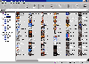

刚学编程那阵，总想为自己编的程序找一个合适的图标。开始是现成的图标太少，动不动请出Photoshop自己做，等到图标多了，真要从千儿八百图标里头找一个中意的图标也不是啥轻松的活。就在我思量如何编一个图标数据库时，IconBook的出现打消了我的念头。因为它正是我——一个编程小子加一个图标狂人想要的当之无愧的图标宝典（如图）。
IconBook的主界面猛一看很像资源管理器，只不过把地址栏改成了关键词搜索栏。左边是一些不同的分类，计有图标、动画图标、光标、设计风格编组、索引图标和字母顺序六大类，以方便你查看所有的图标。右边可就是正主——图标了，你可以像在资源管理器中一样选择按大图标、细节或者列表查看，也可以选择按名称、类型或者来源排列，还可以设定不同的背景色。
IconBook包括了25240个精美图标，提供了1362个关键词，保证在几秒钟内能找到你中意的图标。鼠标右击任何一个图标，会有一个浮动的菜单出现。点击“属性”，就能获得这个图标的类型、色彩数、来源以及关键词等信息；喜欢它的话，选择“另存为” ，就能保存为ICO、ANI、CUR和BMP等格式的文件；如果是动画图标，还会多出个“播放”，在播放的过程中可以动态调整每秒帧数和改变背景色。让IconBook搜索指定目录下的ANI、CUR、DLL、EXE、ICL和ICO文件或者前面任何一种格式指定文件中的图标，然后加到索引图标里面去，添上自己的关键词，这下你总算对满硬盘乱七八糟的图标有个交待了。当然你也可以选择“另存为”，把DLL、EXE和ICL文件里的图标抽出来，是不是挺像IconExtract？这还没完，IconBook还内置一个小巧玲珑却又功能不俗的做图标的小东东——IconCreator，它能将BMP、JPG、GIF和WMF格式的图形文件或者剪贴板里的文字、图形转换成图标，设定透明背景，结合图像处理软件就能做出专业级的图标。
怎么样，看了这么多好看的图标，听了这么多好用的功能，心里边痒痒了吧？快去IconBook的主页http://www.geocities.com/siliconvalley/lab/2355下载一个用用吧，最新的版本是IconBook4.0，主页定期提供升级软件的最新的图标库。
（江苏 杨 羽中） |